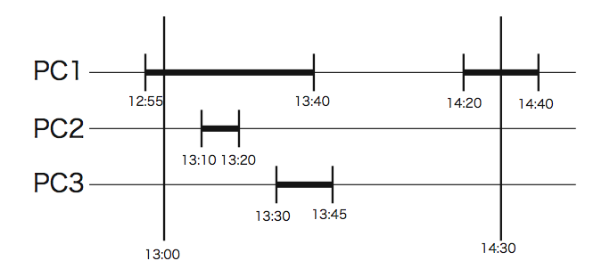

Home Page
F.A.Qs
Statistical Charts
Past Contests
Scheduled Contests
Award Contest
| Online Judge | Problem Set | Authors | Online Contests | User | ||||||
|---|---|---|---|---|---|---|---|---|---|---|
| Web Board Home Page F.A.Qs Statistical Charts | Current Contest Past Contests Scheduled Contests Award Contest | |||||||||
|
Language: Analyzing Login/Logout Records
Description You have a computer literacy course in your university. In the computer system, the login/logout records of all PCs in a day are stored in a file. Although students may use two or more PCs at a time, no one can log in to a PC which has been logged in by someone who has not logged out of that PC yet. You are asked to write a program that calculates the total time of a student that he/she used at least one PC in a given time period (probably in a laboratory class) based on the records in the file. The following are example login/logout records.
 Input The input is a sequence of a number of datasets. The end of the input is indicated by a line containing two zeros separated by a space. The number of datasets never exceeds 10. Each dataset is formatted as follows. N M
The numbers N and M in the first line are the numbers of PCs and the students, respectively. r is the number of records. q is the number of queries. These four are integers satisfying the following. 1 ≤ N ≤ 1000, 1 ≤ M ≤ 10000, 2 ≤ r ≤ 1000, 1 ≤ q ≤ 50
Each record consists of four integers, delimited by a space, as follows. t n m s s is 0 or 1. If s is 1, this line means that the student m logged in to the PC n at time t . If s is 0, it means that the student m logged out of the PC n at time t . The time is expressed as elapsed minutes from 0:00 of the day. t , n and m satisfy the following. 540 ≤ t ≤ 1260, 1 ≤ n ≤ N , 1 ≤ m ≤ M You may assume the following about the records.
Each query consists of three integers delimited by a space, as follows. ts te m It represents "Usage of the student m between ts and te ". ts , te and m satisfy the following. 540 ≤ ts < te ≤ 1260, 1 ≤ m ≤ M Output For each query, print a line having a decimal integer indicating the time of usage in minutes. Output lines should not have any character other than this number. Sample Input 4 2 10 775 1 1 1 780 4 2 1 790 2 1 1 800 2 1 0 810 3 1 1 820 1 1 0 825 3 1 0 860 1 1 1 870 4 2 0 880 1 1 0 1 780 870 1 13 15 12 540 12 13 1 600 12 13 0 650 13 15 1 660 12 15 1 665 11 13 1 670 13 15 0 675 11 13 0 680 12 15 0 1000 11 14 1 1060 12 14 1 1060 11 14 0 1080 12 14 0 3 540 700 13 600 1000 15 1000 1200 11 1 1 2 600 1 1 1 700 1 1 0 5 540 600 1 550 650 1 610 620 1 650 750 1 700 800 1 0 0 Sample Output 55 70 30 0 0 50 10 50 0 Source |
[Submit] [Go Back] [Status] [Discuss]
All Rights Reserved 2003-2013 Ying Fuchen,Xu Pengcheng,Xie Di
Any problem, Please Contact Administrator